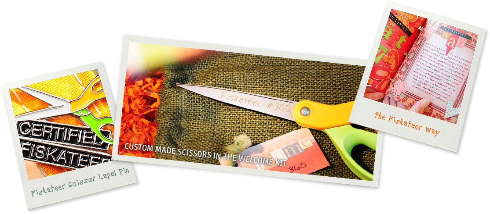
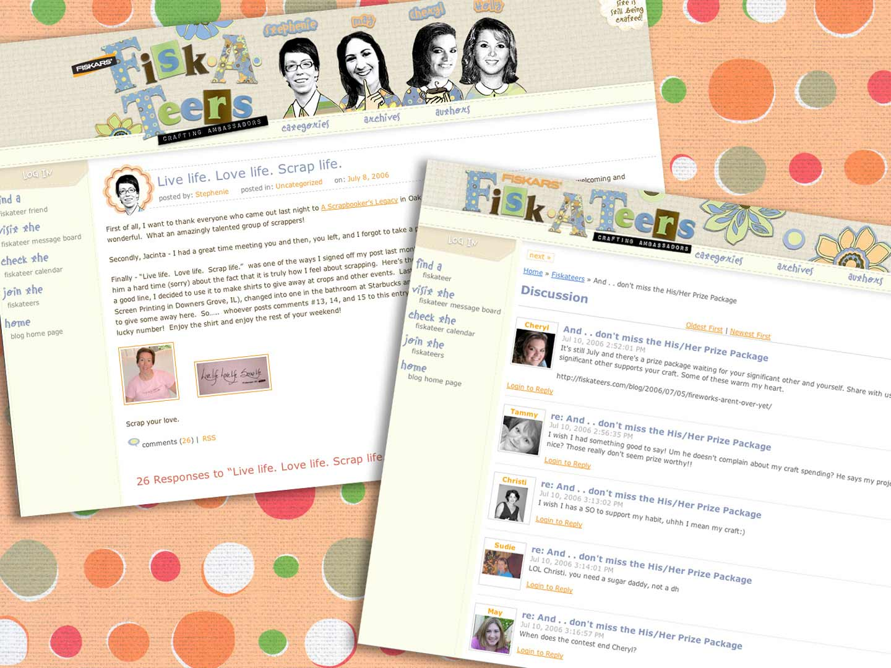

Purpose
- Increase online mentions of Fiskars by name 10%
- Increase sales in specific geographic areas 10%
- Create a relationship between Fiskars and its customers that goes beyond tools
The Craft Division of Fiskars Brands, a Finland-based 350+ year-old company, had very low brand loyalty since their products – crafting tools and consumables – were “knocked-off” in China soon after they hit the market, which put the squeeze on all the dollars Fiskars invested in R&D. Plus, their brand research revealed that they were the “milk and saltine crackers” of their industry… there wasn’t a high-emotional connection there.
We sent out a national call seeking four individuals interested in a part-time paid position as a Fiskars Ambassador. They didn't have to be a crafting guru, but they did have to be a passionate, engaging communicator. After interviews and selections, we brought them to Fiskars HQ for an intense weekend of teaching our tailored curriculum. They also rubbed elbows with product developers and other Fiskars employees. Empowered and educated, these four went back to their sections of the country to spread the goodwill of Fiskars, uniting a community. They regularly post on www.fiskateers.com/blog about their lives -- never "selling" or saying things they don't believe. They attend tradeshows, lead classes in stores, build relationships with storeowners and host online chats. Offline, each Fiskateer receives a personalized welcome kit that includes tools used to recruit others. (The only way to join is to be invited.)
Once officially approved, new Fiskateers received a surprise welcome kit in the mail. The contents included a pair of Fiskars scissors engraved with their name and Fiskateer number. Since Fiskateers typically got together offline at crafting and scrapbooking events, those orange-and-green handled scissors (which you couldn’t get your hands on unless you were a Fiskateer), became the ultimate curiosity-inducing conversation starter.
personalized business cards
Coasters that spark conversations at offline meetups
the fiskateer online portalPrior to the emergence of The Fiskateers, crafters and scrapbookers often didn’t feel safe sharing their work with online communities. The Fiskateer site created a barrier to entry, which in turn created a safe space for everyone to share their work, join the conversation and support others who shared their passion. Over time, people share more than just photos and projects, they shared their lives. Believe it or not, one Fiskateer even offered up a kidney to a fellow Fiskateer in need. (True story!)